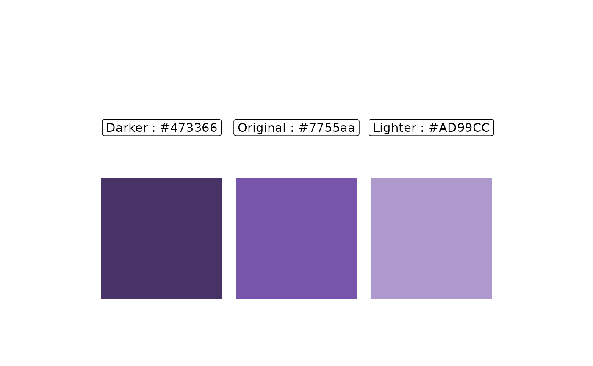

![[Experimental]](figures/lifecycle-experimental.svg)
Arguments
- color
Character value of length 1 - The color that will have its brightness set. A standard 6 digit hexadecimal webcolor like "#000000" or a valid
Rcolor fromcolors()is accepted.- percentage
A numeric value of length 1. The percentage of which the brightness should be set. Values from 0 - 1 are accepted.
Examples
# Load in ggplot2 so we can see the colors
library(ggplot2)
# Create color values
original_color <- "#7755aa" #(original brightness == .5)
darker_color <- set_brightness(original_color, .3) #(brightness == %30)
lighter_color <- set_brightness(original_color, .7) #(brightness == %70)
# Make a data frame with the color values
df_colors <-
data.frame(
x = 0:2,
y = 1,
color = c(darker_color, original_color, lighter_color)
)
# Add a label for clarity
df_colors$label <- paste(c("Darker", "Original", "Lighter"), ":", df_colors$color)
# Plot to see the brightness changes
df_colors |>
ggplot(aes(x,y)) +
geom_label(aes(x = 0:2), y = 2, label = df_colors$label) +
geom_point(color = df_colors$color, shape = 15, size = 50) +
coord_cartesian(xlim = c(-1,3), ylim = c(0,3)) +
theme_void()
